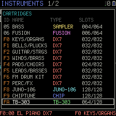
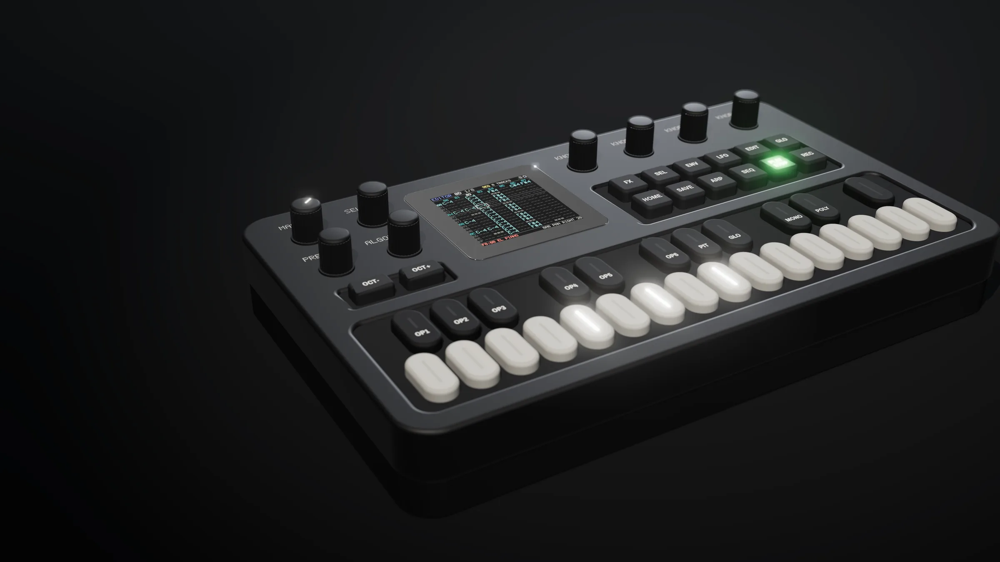
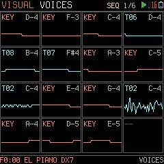
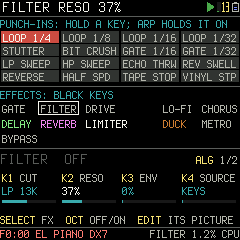
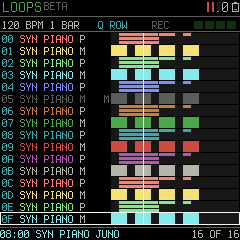
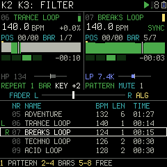
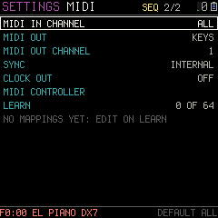
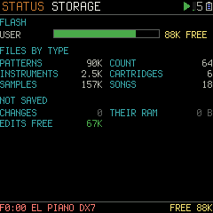
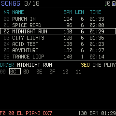

Six kinds of instrument
DX7 6-operator FM, JUNO-106 analogue, TB-303 acid bass, CHIP for 8-bit sound, a sampler, and FUSION, where one key plays a whole row: a chord, a layer or a drum kit.

Music is written as patterns: a grid of up to 16 tracks across and 128 rows down, one row a step in time. A cell holds a note, its instrument, a volume and up to four commands. Any track plays any instrument, so FM, analogue, acid, chip and sampled sounds share one song. You write it, play it, and play over it, all on the FM-1.

DX7 6-operator FM, JUNO-106 analogue, TB-303 acid bass, CHIP for 8-bit sound, a sampler, and FUSION, where one key plays a whole row: a chord, a layer or a drum kit.

Up to 16 notes at once from the songs, the loops and the keys together, spread over the FM-1's two processor cores.

GATE, FILTER, DRIVE, LO-FI, CHORUS, DELAY, REVERB, LIMITER and DUCK, set per song. On FX LIVE the white keys become 16 punch-in effects, each heard while its key is held.

A loop station: layer up to 16 loops, mute and solo them from the keys, and record the whole performance as a new song.

Two songs on two decks, kept in time, mixed with a crossfader, filters, pads and an LFO.

Play it from a keyboard over USB or the MIDI IN jack, follow or send MIDI clock, use the FM-1 as a controller, and record it over USB audio.

SAVE writes songs, patterns, instruments and settings into the FM-1's own memory. They survive power-off and firmware updates.

Over 500 synth instruments are built in. The demo disk adds samples, a drum kit, demo songs and DJ loops.
Install PT/FM over USB from this site, then upload the demo disk from the same page. USB RESCUE stays, and so does the way back to another firmware.Chrome or Edge, on a computer or an Android phone.
Install PT/FMThe real PT/FM firmware running in your browser, with sound. Try every screen before you install.
Open the emulatorPT/FM's page for your computer. Back up the FM-1, bring in tracker modules, MIDI files, DX7 cartridges and sounds, and edit them with the FM-1's own pictures.A beta. Chrome or Edge on a computer.
Open the editor